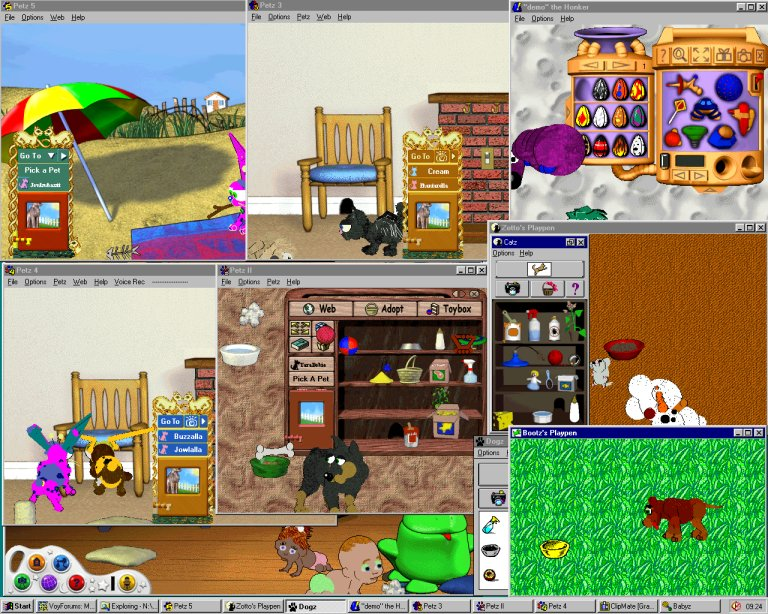

Fun stuff that fits nowhere else
~~~~~~~~~~~~~~~~~~~~~~~~~~~~~
Here's proof, for anyone who cares, that every single P.F.Magic and Petz game can be opened at the same time on one computer. Below is a screenshot, taken after I had brought out one or more petz in all of: Dogz original, Catz original, Oddballz, Petz II, Petz 3, Petz 4, Babyz, and Petz 5. Not only did they run perfectly together at a normal speed, but also I was able to tend to each of the pets in the various games with no problems at all either to the computer or the pets -- although my own brain nearly fried :-) The picture is completely un-edited; all that's been done is to reduce the size and save as jpg instead of bmp.

In Babyz, you can see that Cyril's "eyeshadow" has been changed again, and he's getting along well with little
Laretha. In Petz 5 I'm testing Butterfly Chaser's latest creation (the Whazzit, not yet ready for release so
don't ask). In Petz 4 another Whazzit and a Buzzo are waiting by the mousehole, in Petz 3 my site's guardian
angel cat is playing with a recently-rescued friend, in Petz II I've got a Doberman test-pet and in Oddballz
dear old Honker has just been tootling for me. In Catz, the mouse has just caused the (still-unfinished and
therefore unreleased) Snowbo to fall over; and in Dogz, my faithful old Bootz is waiting for me to refill his
dish.
A note for those who are interested -- this was done on a Pentium III 600, with 384 megabytes of RAM, under
Windows 95 OSR2. The German version of Petz 3 doesn't open at the same time as the English version on my
computer -- it thinks it's the same game -- and the US version of Oddballz similarly doesn't open at the same
time as the UK version.